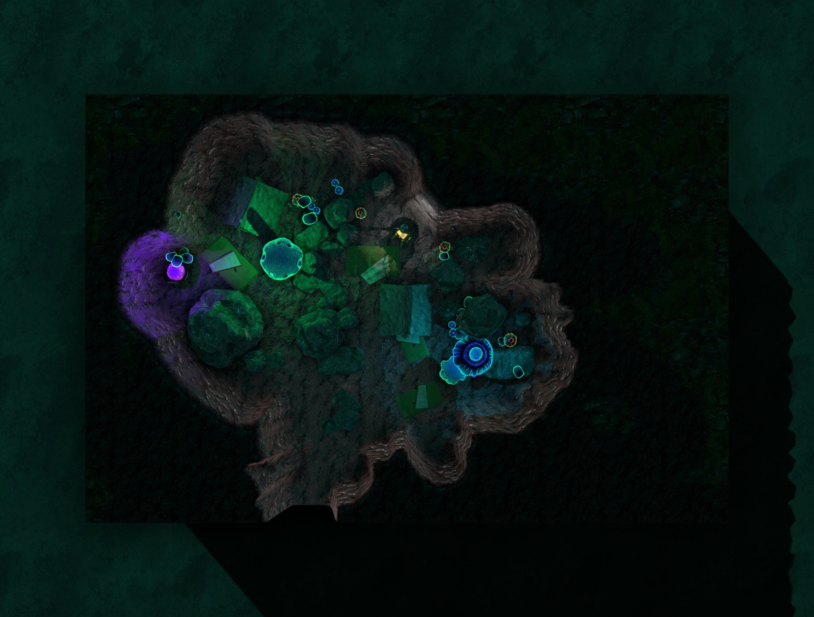
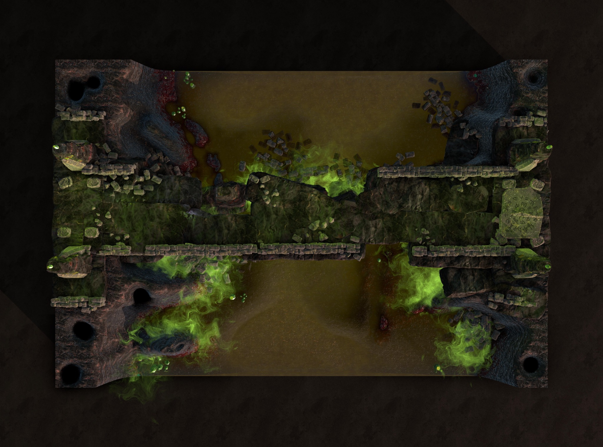

A primeira caverna
O grupo encontrou sacos de dormir, restos de fogueira e anotações sobre a Gorja e as necessidades do corpo. Chikonde recolheu um cristal com cinquenta de ânima. O gigante voltou e derrubou o teto sobre os personagens.
O abrigo perto das jaulas
Depois da fuga das correntes, TK conduziu o grupo até uma caverna próxima de jaulas suspensas. Reconheceram seus papéis; ali aprenderam a manifestação, o Ritual da Permanência e a direção do Caminho.
A descoberta de Jeremias
A caverna com mochila pequena, três cristais e vaso de vegetais também era um dos acampamentos de TK. Antes de entrar na oficina, o trio devolveu os equipamentos e o cristal restante, deixando um pedido de desculpas escrito por Juliana e assinado por Jeremias. O vaso permaneceu no templo.